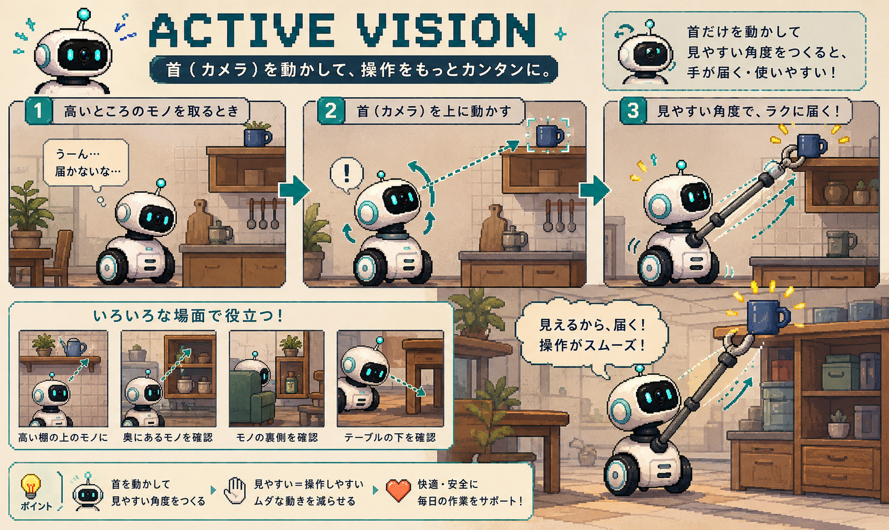
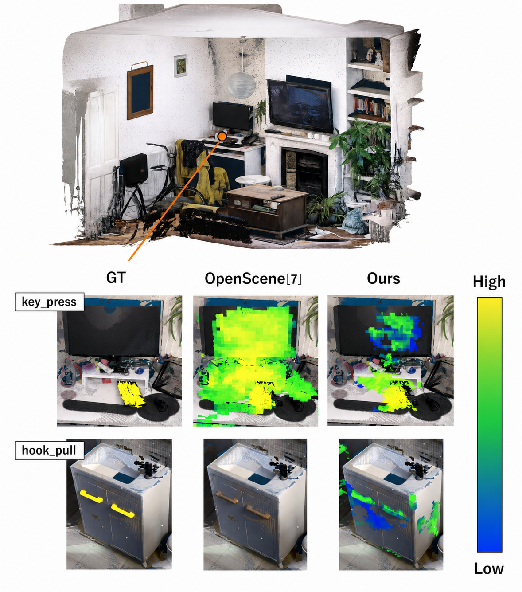

Researcher of Active Vision
荒明 尚輝Naoki Araake
人がもっと自由に動ける世界へ。
人が身体、脳、空間、時間の制約から解放される社会へ。
MIRU2026 Oral Presentation
Research Focus
見えている世界を認識するロボットから、
必要な世界を見にいくロボットへ
Active Vision for manipulation
ロボットが人間の世界で行動するには、与えられた視点を認識するだけでは不十分です。 見えない部分、隠れている部分、操作に必要な部分を自ら確かめにいくことで、より安全で確実に行動できるロボットを目指しています。

3D scene affordance segmentation
学部時代は、3D点群を用いてシーン内のアフォーダンスを認識する研究に取り組みました。 物体単体ではなく、空間の中で「どこにどのような行為が可能か」を推定することに関心があります。

What should the robot look at next?
与えられた画像を認識するだけでなく、次にどの視点へ動けば行動に必要な情報が得られるのかを考える。 そこに Active Vision の面白さがあります。
Vision
Daily automation, extended into the physical world.
プログラミングは、面倒な作業を自動化できる手段として魅力的でした。 Physical AI は、その自動化を物理世界へ拡張するための技術だと考えています。
Reduce
日常生活にある不要な作業を減らす。
Automate
ソフトウェアで反復作業を軽くする。
Act
ロボットが必要な情報を自ら取りにいく。
Projects & Experience
Building systems across software and physical spaces.
葛飾キャンパスロッカープロジェクト
キャンパス内の身近な不便を起点に、利用者の行動から運用まで含めて仕組みを設計するプロジェクトに取り組みました。
Nebraska / 無人書店
物理空間で動くサービスに関わり、ソフトウェアが現実の体験やオペレーションに接続する面白さを学びました。
Infodeliver / MCP Server
MCPサーバー構築に取り組み、AIエージェントと外部システムをつなぐインターフェース設計を経験しました。
Bandai Namco Holdings
エンターテインメント領域の開発現場に触れ、ユーザー体験を支えるプロダクトづくりを学びました。
CyberAgent
実サービスに近い開発環境で、スピード感のある実装とチーム開発の進め方を経験しました。
Achievements
Recognition for research and presentation.
東京理科大学 工学部 情報工学科 優秀学生賞
学部時代の研究活動と成果に対する表彰。
MIRU2026
Oral Presentation
Research paper selected for oral presentation at MIRU2026.
Profile
Naoki Araake / 荒明 尚輝
京都大学大学院 情報学研究科 谷口研究室で Active Vision と Manipulation に取り組んでいます。 関心は、ソフトウェアによる自動化を物理世界へ拡張し、人が余計な作業から解放される社会をつくることです。
- Previous
- Tokyo University of Science / Irie Lab
- Current
- Kyoto University / Taniguchi Lab